The challenge of big data in exoplanet science
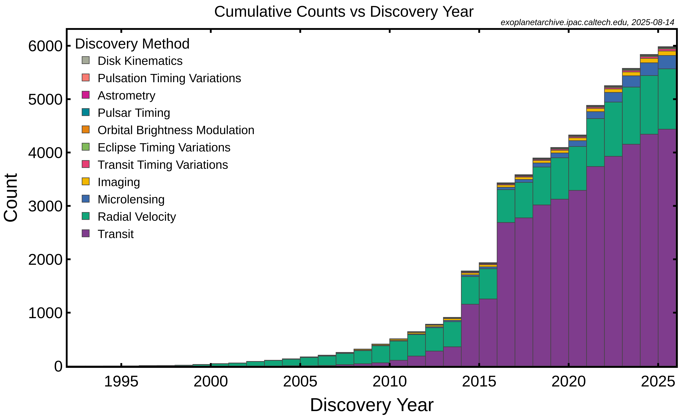
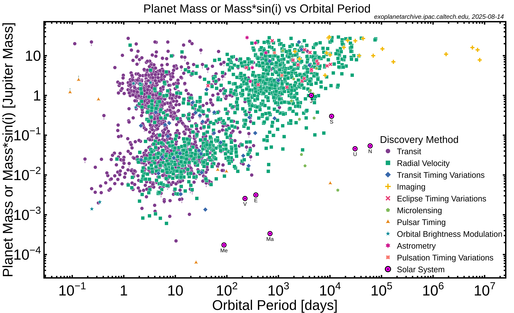
Roman et al. in prep.
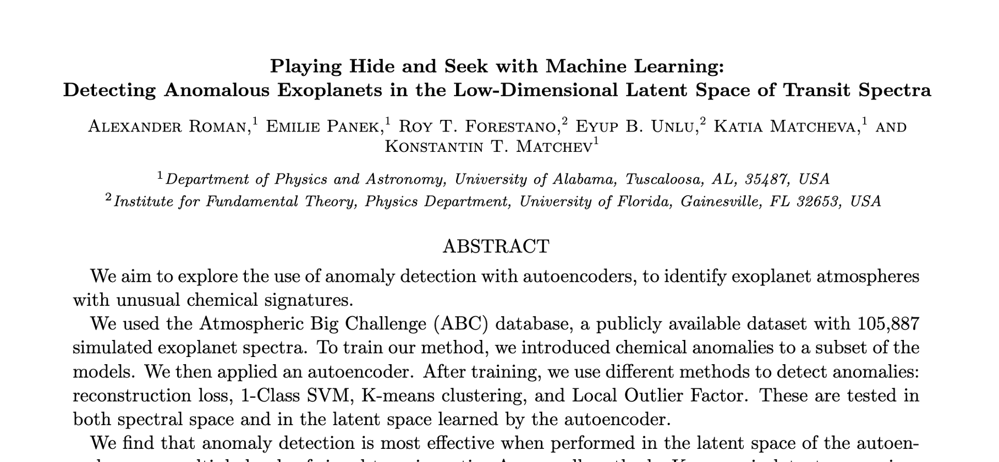
Database
- 5900 objects from Ariel MCS
- Use TauREx to recalculate the noiseless spectra
- simulated instrumental noise using a
standard Gaussian distribution
- final database of 69,099 spectra
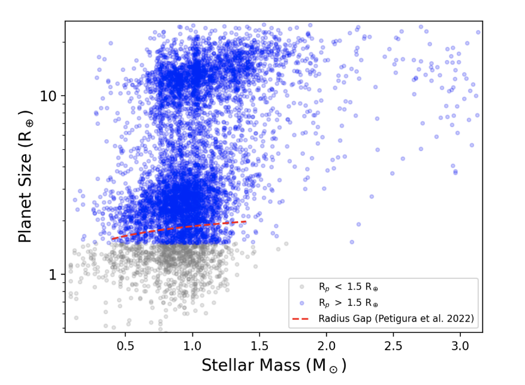
Size of the considered planets versus the mass of their host star.
Figure 1 from Changeat & Yip 2022
Same modifications than Forestano et al. 2023.
Normal vs Anomalous spectra
- Two populations: normal and anomalous spectra
- Define spectra with relative abundance of CO2 exceeding 5% as anomalous
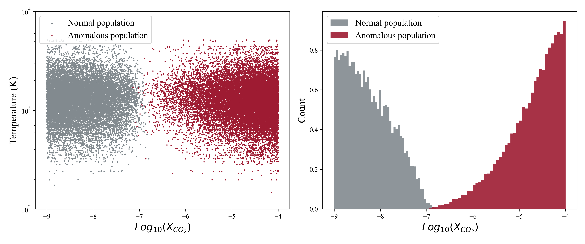
Normal vs Anomalous spectra
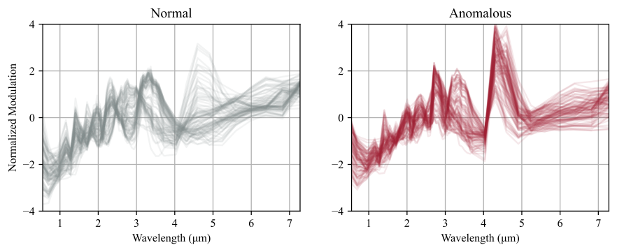
Autoencoder architecture
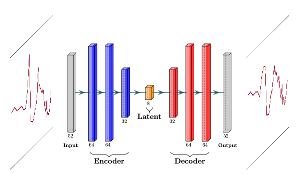
- Encoder compresses the input
- Decoder reconstructs the input
- from 52 dimensions to 8 dimensions
Reconstruction loss
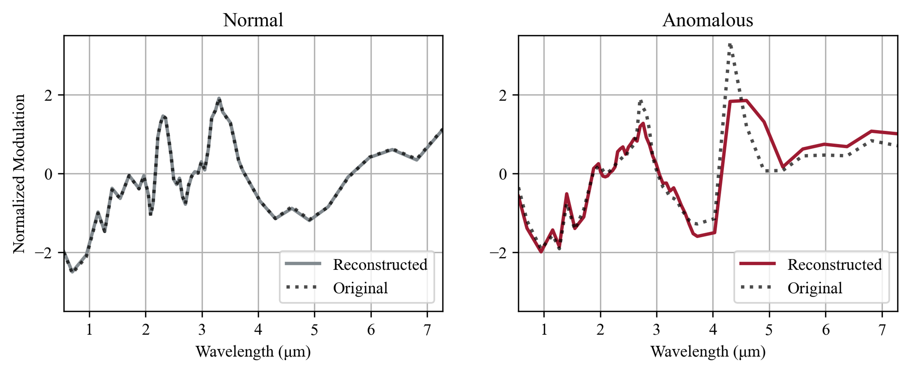
- If a spectrum is familiar, the autoencoder will reconstruct it well
- If it’s unfamiliar or strange, the reconstruction will be poor
Anomaly detection
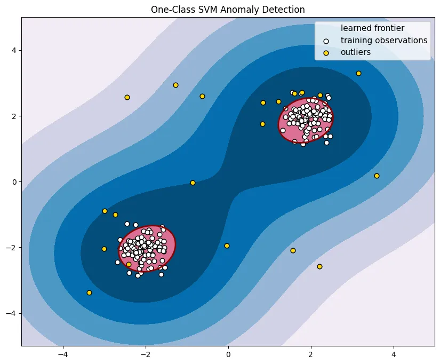
Anomaly detection
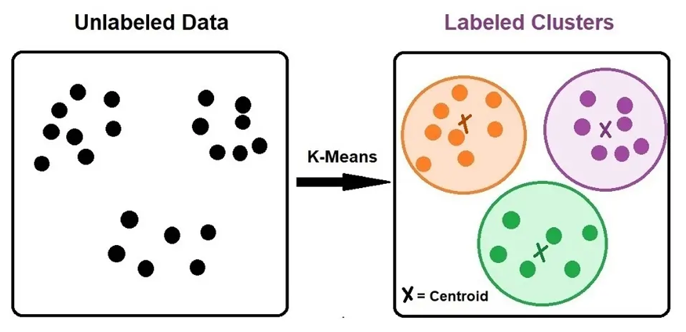
Anomaly detection
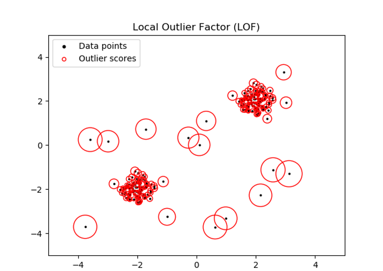
- 1-Class SVM
- K-means
- Local Outlier Factor (LOF)
Results - Histograms
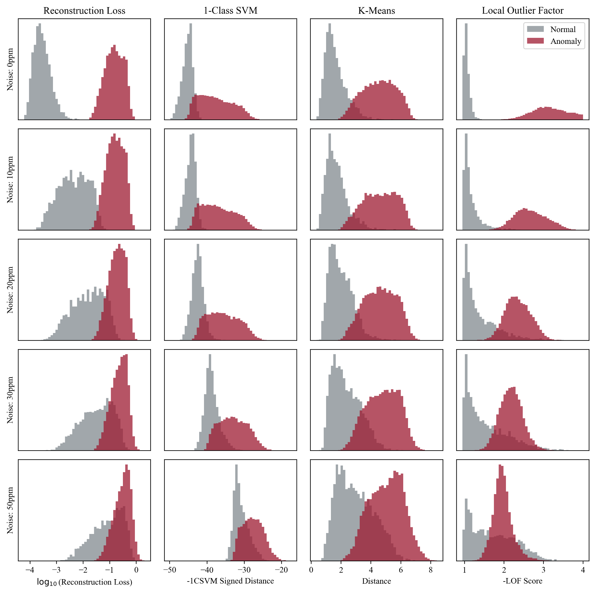
Histograms in spectral space
Results - Histograms
Histograms in latent space
Results - ROC curves
- True positive rate vs false positive rate
- Diagonal = no better than random guessing
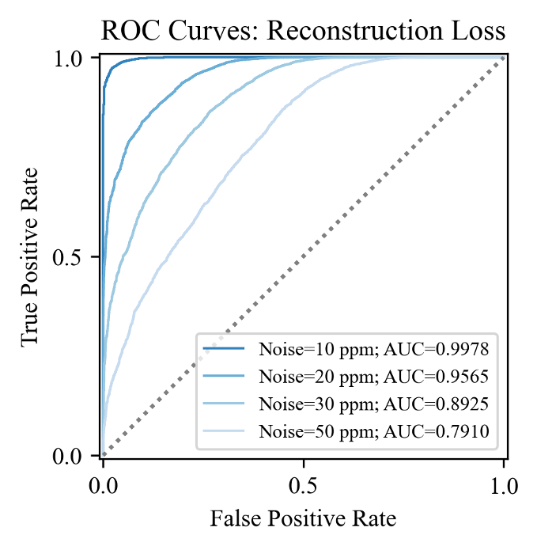
Results - ROC curves
- True positive rate vs false positive rate
- Diagonal = no better than random guessing
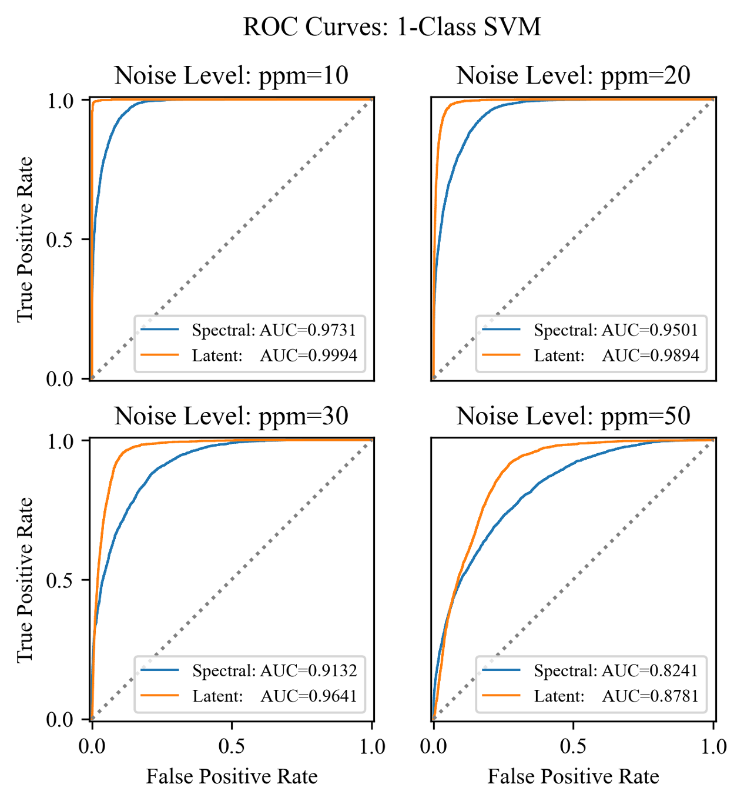
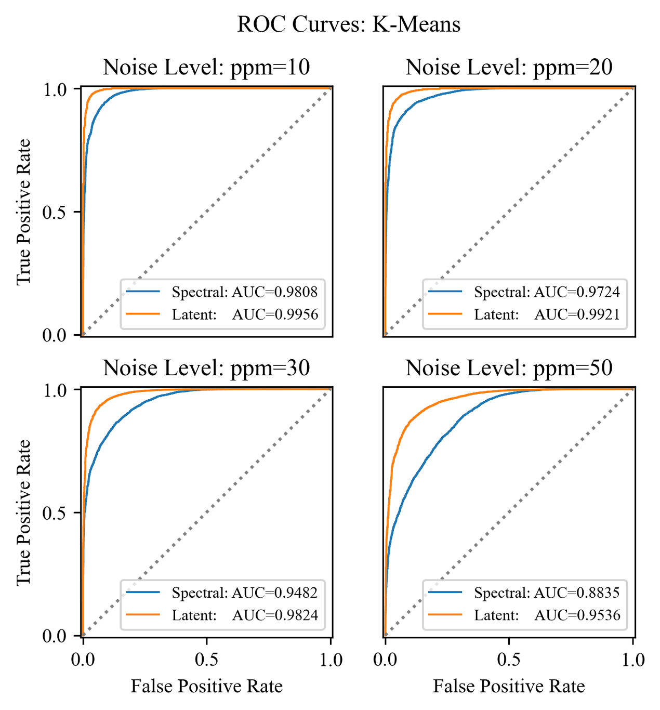
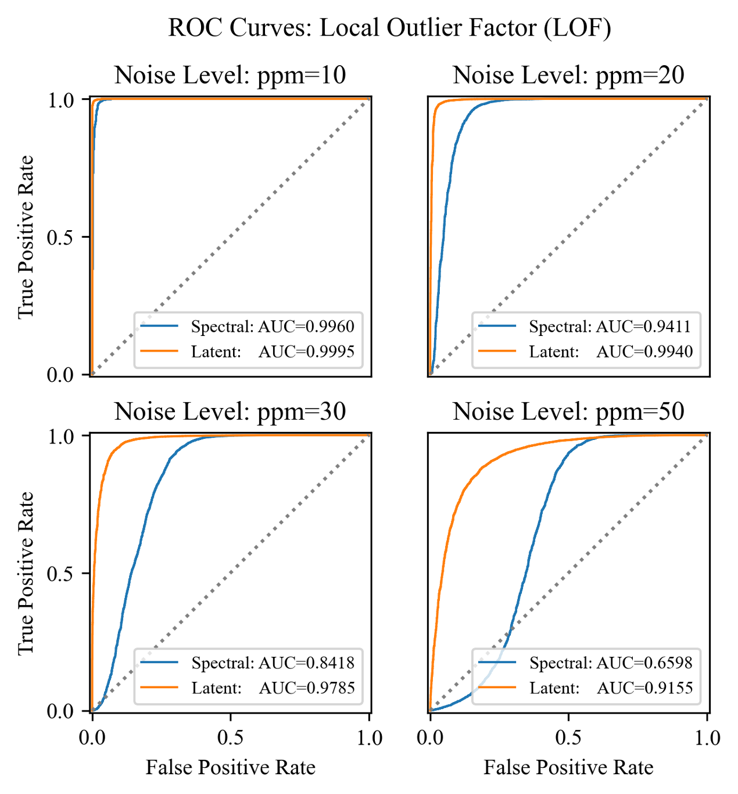
Comparison of methods
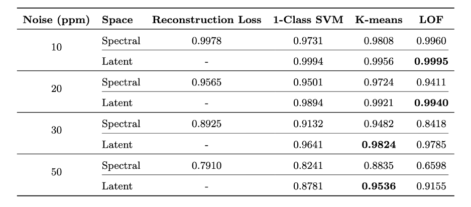
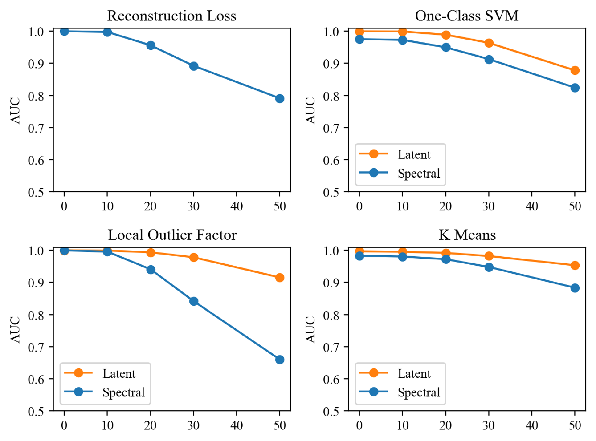
Conclusions
- Anomaly detection using autoencoders is most effective in the latent space
- K-means clustering gives the best performance
- The method is robust to noise, up to a realistic level expected for space-based observations around 30 ppm